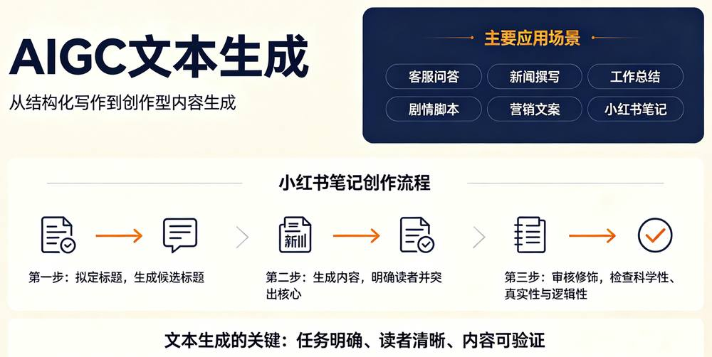
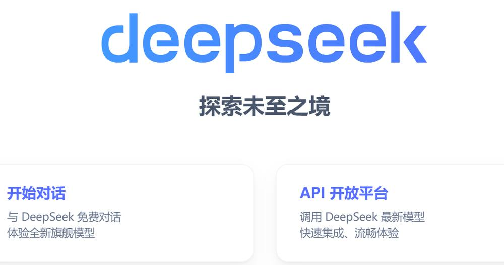
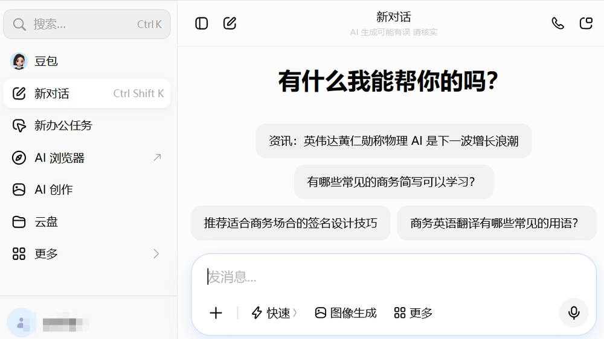
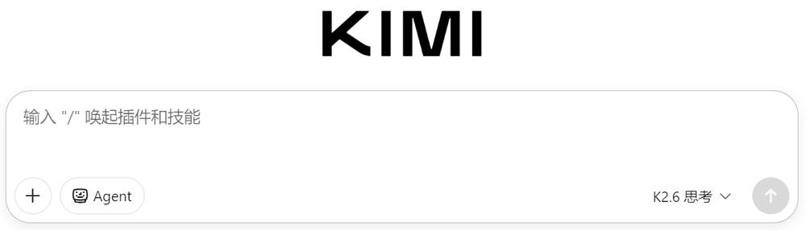
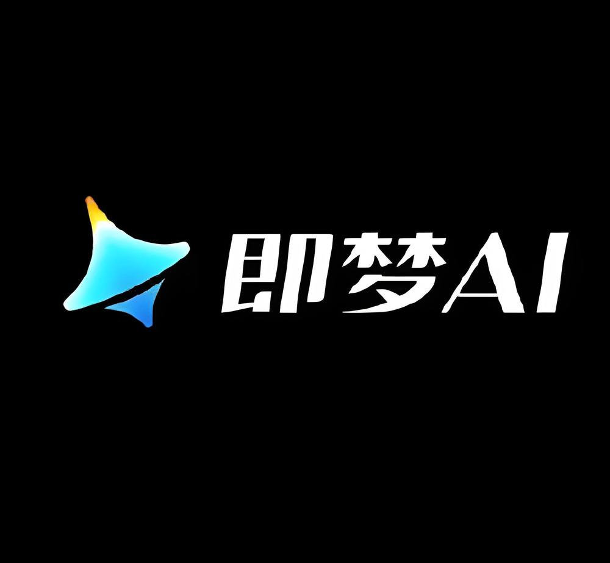
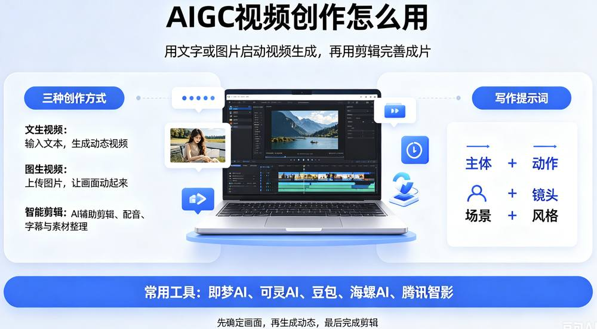
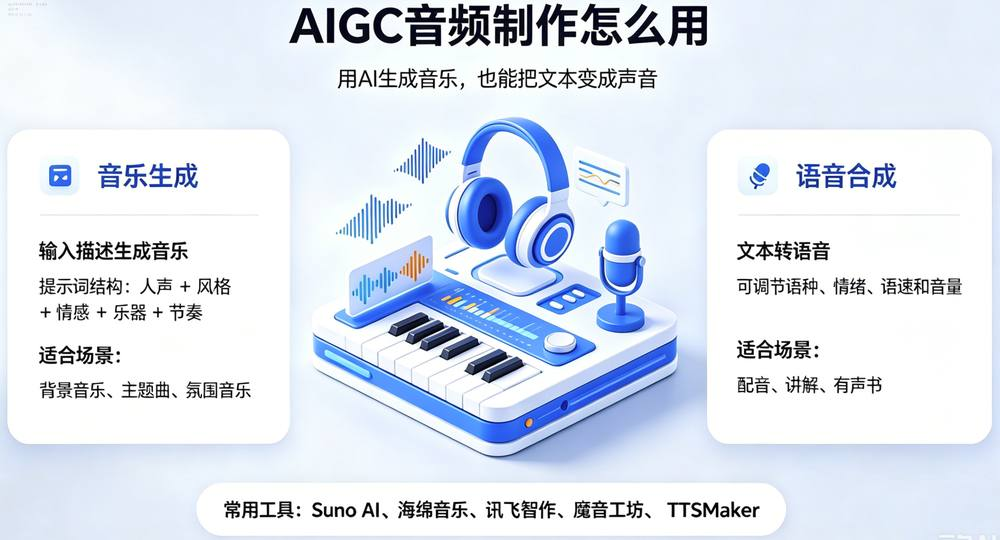

第 1 页 · 3 AIGC常见应用
3 AIGC常见应用

模块5：浅尝生成式人工智能


第 2 页 · 中国首部全流程AIGC动画电影《团圆令》
中国首部全流程AIGC动画电影《团圆令》
第 3 页 · 一、AIGC文本生成
一、AIGC文本生成

第 4 页 · 一、主流AIGC文本生成工具
一、主流AIGC文本生成工具
DeepSeek
豆包
千问
Kimi



第 5 页 · 二、AIGC图像创作
二、AIGC图像创作
01 文生图 (Text-to-Image)
通过算法将文本语义直接转化为视觉元素，无需专业美术基础，即可快速将脑海中的创意具象化呈现。
核心关键：精准的提示词结构（关键词+场景+风格+参数）搭配适配的AIGC工具，是产出高质量图像的基础。
02 图生图 (Image-to-Image)
以参考图像为基底，利用大模型对画面内容、色彩、构图进行二次创作与调整，保留原图核心特征的同时实现创意升级。
典型场景：适用于图像局部元素替换、艺术风格迁移、创意内容改编及画面细节的精细化修饰等场景。
豆包AI
多模态创作助手，操作简便，适合新手快速生成创意图像。
文心一言
具备强大的理解与生成能力，支持复杂场景的高保真图像创作。

专业工具
即梦、可灵等专注视觉生成，效果更具艺术张力。
常用的图像生成工具：
第 6 页 · 三、AIGC视频创作
三、AIGC视频创作

第 7 页 · 四、AIGC音频创作
四、AIGC音频创作

第 8 页 · AIGC应用工具集锦
AIGC应用工具集锦

请分类归纳常用的AIGC工具。
| 类别 | 常用工具 |
| 文本生成 | |
| 文生图 | |
| 音频生成 | |
| 视频生成 | |
| 其它 |
第 9 页 · 学生分享及教师点评
学生分享及教师点评

| 分享要点 | 分值 | 计分 | 教师点评 |
| 1、你是如何搜集整理AIGC工具的？ | 10 | 主动使用AI工具 | |
| 2、你与同学进行了哪些充分的讨论？ | 10 | 集思广益、团结协助 | |
| 3、你是如何针对具体应用场景来选择AIGC工具的？ | 30 | 积极思考、善于思考总结 | |
| 4、AIGC还有哪些新应用？ | 20 | 创新思维、与众不同 | |
| 5、AIGC对你学业的影响有哪些？请简述1-3条 | 20 | 从现在开始，从身边做起 | |
| 6、其它（含逻辑、表情、主动、清晰、流畅、自信等） | 10 | 能说、亲和、善用、精技 |
第 10 页 · 子任务3：语音提示处理
子任务3：语音提示处理

主动拥抱AIGC
让AIGC赋能你我